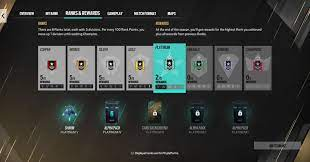

Ranked is the most popular gamemode in Rainbow Six Siege, most people play it just to rank up and get the highest rank, Champion. It is a goal everyone has set but they need to have a LOT of DAYS on the gmae to reach this goal. There are a lot of ranks in the ranked playlist. Those ranks are: Copper, Bronze, Silver, Gold, Platinum, Emerald, Diamond, and Champion! each rank has 5 divisions. all requiring 100 "RP" to rank up 1 division. "RP" means "Ranked points" In order to rank up a division and get 100 RP you need to win around 4-5 games in a row. According to the math it will take 35 divisions to get to champion! That's roughly 200 games in a row from Copper V to Champion!
First in a ranked match, you will go through a ban phase. 1 ban phase is the map ban phase. There will be 5 random maps out of the 13 maps in the ranked rotation. You and your team of 5 will vote for a map to "ban" or "not play" then. It will randomize from the maps that weren't banned and pick one. After you get the map there is an operator ban phase. Both teams in the ranked match will ban 2 operators from both attacking and defending. A ranked match consists of first to 4, although, if it ties 3-3, then it will go to overtime. Overtime then makes it first to 5.
In standard, there are no ranks. It's just the siege game it self. In standard. There is a map ban phase and an operator ban phase. Standard is just like Ranked but there are no ranks. Standard is a first to 4 gamemode. But when it goes to 3-3. It's overtime, the only part that is different about the overtime is that is goes straight to sudden death at 3-3 to make it a shorter match and a genuine first to 4.
Quick match is basically the warm up game mode. In quick match it is very fast and short. In quick match you can leave the game whenever you want without getting a penalty. Quick match has no map ban phase or operator ban phase. There are also 30+ maps in quick match. Quick match is a first to 3. When it's overtime, it goes to sudden death. Making so it is a genuine first to 3.